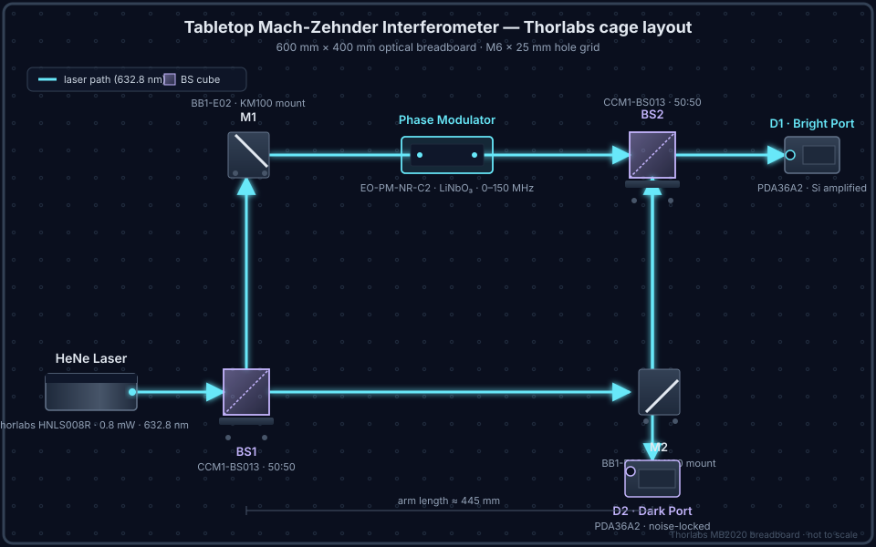

How laser interferometric metrology actually works
A plain-language, interactive primer. Hover any component for details, and use the mode buttons to layer power locking and noise locking onto the same hardware.
The one-sentence idea
If you split a laser beam in two, send the halves on slightly different paths, and then recombine them, the way they add back together reveals — with sub-wavelength precision — any tiny change in those paths.
That is all an interferometer is: a machine that turns microscopic length changes into measurable light intensity changes. The rest is engineering.
Interactive: PQS interferometer with squeezed-light injection
This layout reflects the current benchtop NSL test concept and working optical drawing. It illustrates a Mach-Zehnder interferometer with an OPO path feeding squeezed-vacuum injection at the dark port, along with the control hardware used to compare conventional locking and noise-stationary locking.
Power locking vs noise locking — why PQS picks a different fight
A conventional power lock tries to pin the interferometer to a single operating point on the fringe. It measures how far the fringe has drifted, then pushes it back with a feedback loop. This works beautifully in a quiet lab — and falls apart when the environment is loud, non-stationary, or when the lock loop has to compete with the very signal you want to measure.
PQS's approach inverts that. Instead of holding the interferometer at a single instantaneous value, noise-stationary locking holds the statistics of the dark port stationary. An auxiliary phase-coded field is injected at the dark port, and a detection-normalized objective keeps its noise distribution — not its instantaneous value — constant. The lock survives conditions a power lock cannot.
Noise lock — dark-port residual SNR vs drive amplitude
What a tabletop prototype actually looks like
A real CAD layout of a PQS-style MZI built from off-the-shelf Thorlabs parts on a standard optical breadboard. Everything ships as catalog hardware, which is what makes this approach reproducible and inexpensive relative to bespoke quantum kit.

Interactive: fiber-optic gyroscope (Sagnac)
A fiber gyro wraps the split-and-recombine trick into a closed loop. Both beams travel the same fiber but in opposite directions — clockwise (CW) and counter-clockwise (CCW). When the whole assembly rotates, the CW photon has a slightly longer path and the CCW photon a slightly shorter one. That time-of-flight asymmetry is the Sagnac effect, and it's how every modern ring-laser and fiber-optic gyro senses rotation.
Hover the parts to learn the hardware. Use the method buttons to switch the overlay between conventional operation, noise-stationary locking, and phase-coded dark-port injection.
Illustrative plots
The plots below are illustrative placeholders used to explain the control concepts visually. They are not presented here as validated prototype data.
Potential application areas under evaluation
- LiDAR Potential use in coherent ranging and interference-aware optical sensing.
- Optical links Potential use in free-space or phase-coded optical link architectures where control robustness matters.
- Metrology Benchtop displacement and rotation sensing where controlled comparison against conventional locking is valuable.
- Quantum-adjacent A classical control substrate that may support more advanced reduced-noise measurement schemes when hardware and loss budgets allow.
Get in touch if you would like to discuss application fit, prototype collaboration, or licensing conversations.
Ready for the next level?
Metrology 201 covers atomic interferometry, Information-Stationary Locking, and the expansion from optical to matter-wave sensing.
Continue to Metrology 201 →